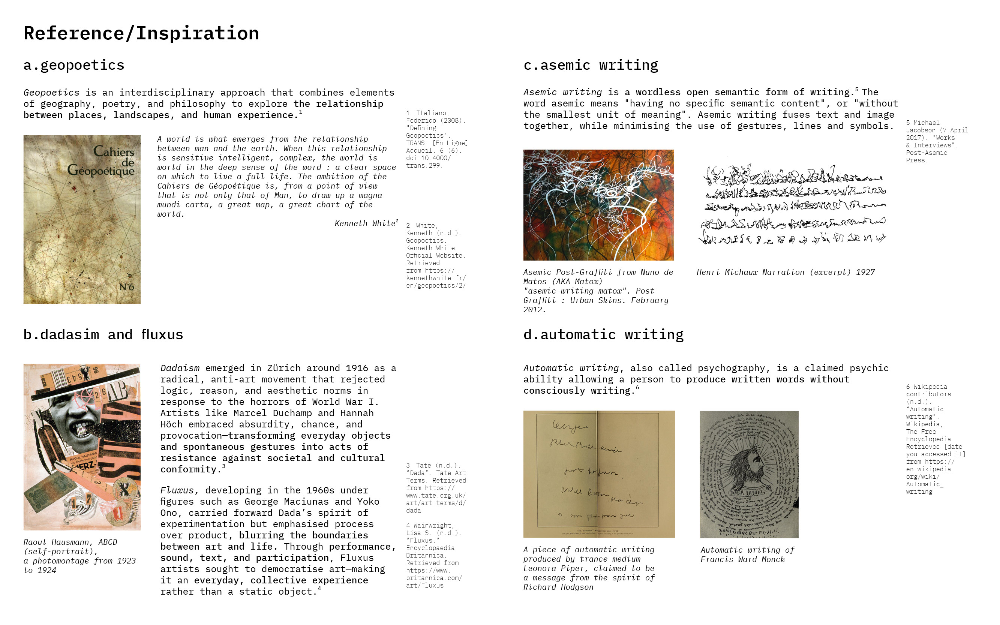
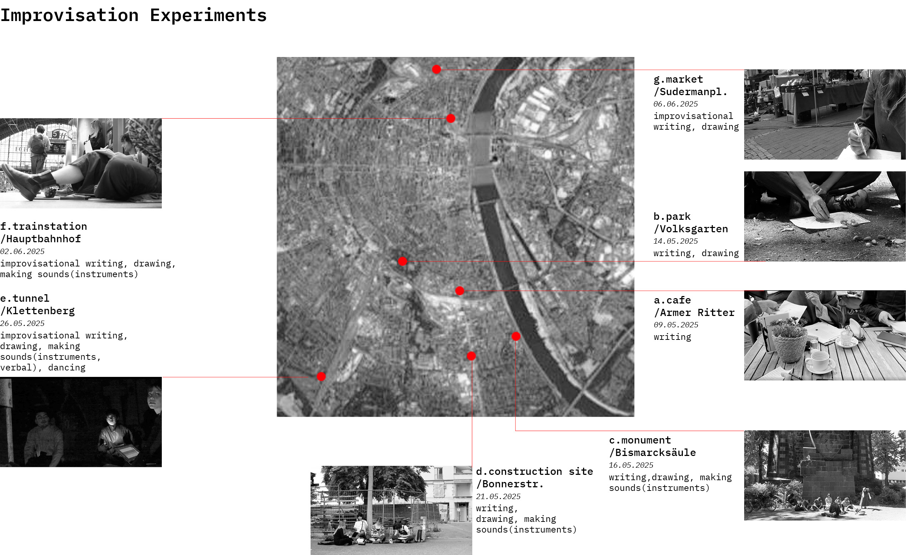
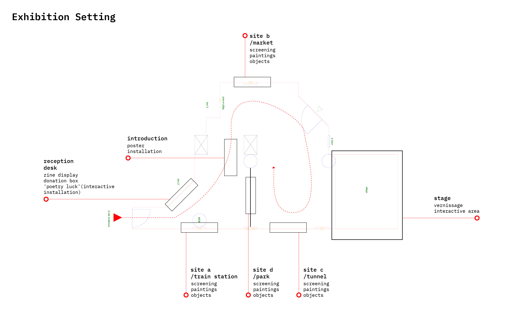
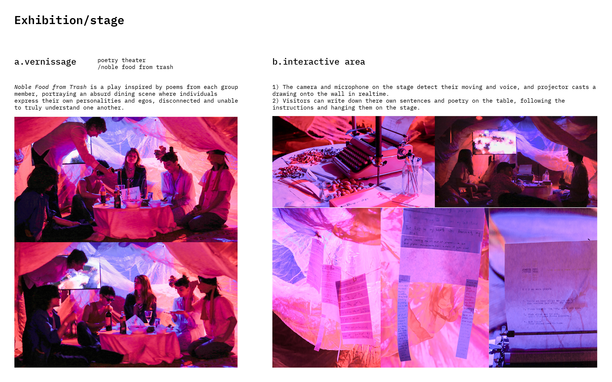
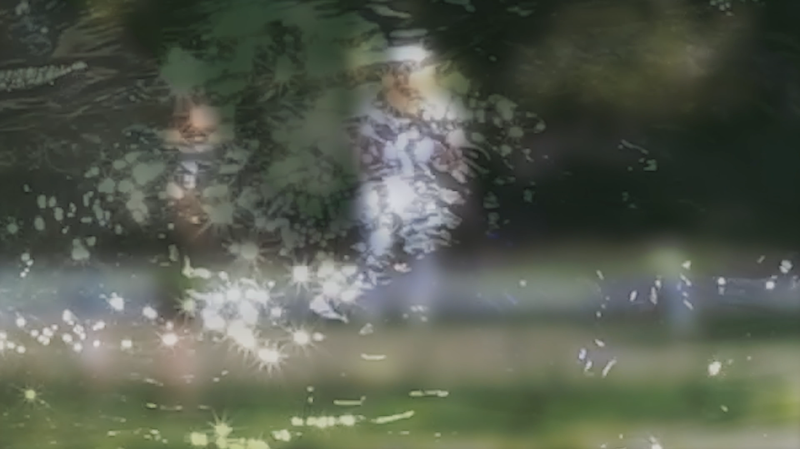

Where Within is a self-organized curatorial project initiated in Cologne in 2025. It explores how individuals might build a deeper dialogue with their surroundings within the mechanized rhythms of urban life. Working with Spacebenders Collective, the project unfolded through improvisational interventions in public spaces, including train stations, construction sites, and parks, using spoken poetry, sound experiments, drawing, and performance as ways of sensing the city through the body.
Presented later as a multimedia exhibition, the project reflects on authorship, participation, and open interpretation. Rather than positioning the city as a stable backdrop, it proposes urban space as something fluid, embodied, and continuously retranslated through collective presence.





4 Poeces assembles and reorganizes visual material collected across four urban sites: a train station, a market, an abandoned tunnel, and a park. The film includes documentation of improvisational processes, participants’ spontaneous outputs (text, sound, movement, etc.), and details from each site. Through fragmented and intuitive editing, the work reconstructs the atmospheres and bodily sensations of different spaces.
Editing / Shucen Liu
Sound Design / Nina Rebhan, Shucen Liu
Camera / Nicolai Rehberg, Shucen Liu
Where Within began from a question of how one might reconnect with the overlooked textures of urban life. Instead of treating the city as a fixed environment to move through, the project approached it as a field of unstable relations, rhythms, interruptions, and traces. Public interventions became a way of listening to the city differently, not through efficiency or navigation, but through pause, drift, and embodied attention.
The process was collaborative and improvisational. Spoken poetry, movement, and sound experiments were used as tools to activate spaces otherwise experienced as transitional or anonymous. These actions did not aim to dominate the site, but to remain porous to it — allowing the environment, its noises, constraints, and accidental encounters to shape the work in return.
The later exhibition format assembled fragments from different urban sites into a shared spatial narrative. Documentation, collected audio, text, and visual materials were brought together not as a singular conclusion, but as an open structure through which viewers could move between field experience and retrospective reflection.
In this sense, Where Within is not only a project about urban space, but also about modes of co-presence: how temporary gatherings, situated gestures, and partial translations may generate other ways of sensing place, authorship, and collective imagination.